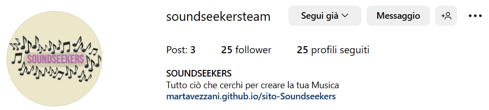

Fig. 3 - Wireframe della Guida all'uso
Soundseekers è stato pensato come una sorta di sito d'incontri per gente con una passione in comune: la musica.
Contiene due sezioni principali, una bacheca e un forum, che vogliono permettere agli utenti di pubblicare e leggere annunci grazie ai quali stabilire nuove connessioni e interagire, nel migliore dei casi avviare tra loro collaborazioni interessanti.
Soundseekers vuole essere un nuovo portale di scambi, e tenta di aiutare i musicisti a trovare "la persona giusta".
Alcune funzioni all'interno del sito (come iscrizione e pubblicazione) non sono ancora state abilitate, ma sono state create appositamente per dare un'idea delle possibili azioni che mi piacerebbe si potessero compiere.
L'obiettivo principale di Soundseekers è quello di creare connessioni e collaborazioni tra artisti, in quanto la musica è a mio parere pura condivisione.
Il sito è stato creato con l'intento di stimolare chiunque vi si imbatta a condividere con gli altri non solo il proprio lavoro, ma anche le proprie idee. Al suo interno sono infatti presenti due sezioni centrali: la bacheca, che contiene annunci più professionali e utilitaristici, e il forum, dedicato al dialogo e al confronto personale.
Insomma, la mia speranza è quella di coinvolgere non solo professionisti del settore, ma anche persone curiose e interessate al mondo della musica.
Soundseekers è un sito rivolto a tutti gli amanti della musica: il target a cui si rivolge è estremamente ampio ed inclusivo, in quanto comprende non solo professionisti ma anche principianti interessati al settore.
La semplicità strutturale della piattaforma dovrebbe infatti permettere a chiunque di usufruirne, dai più giovani ai più adulti.
Generalizzando, potremmo dividere il target audience di Soundseekers in tre macro-categorie: i giovani, spesso inesperti e in cerca di aiuto, che vogliono entrare nel mondo della musica; i ragazzi tra i 20 e i 30 anni, che hanno voglia di sperimentare e collaborare tra loro; e gli adulti, che fanno della musica il proprio lavoro.
In fase di progettazione ho avuto modo di analizzare lo scenario di mercato riguardante le piattaforme per artisti musicali.
Sebbene esistessero già diversi siti di annunci per musicisti, ho trovato la maggior parte di essi poco curati e difficili da consultare.
Le pagine Soloannuncimusica.it e Iosuono.com per esempio, pur contenendo ricchissime sezioni dedicate agli annunci degli utenti, risultano essere a mio parere molto confusionarie e mal organizzate.
I messaggi, proprio perché numerosi, vengono mostrati solo parzialmente e sembrano susseguirsi senza apparente criterio, rendendo la lettura e soprattutto la selezione estremamente difficili per i visitatori.
La grafica è poco curata e la struttura delle pagine le rende confusionarie. A mio parere le schermate sono troppo piene di scritte e immagini e risultano disorientanti.
Una piattaforma che ho trovato molto d'ispirazione è invece Kleisma, creata nel 2018 da tre giovani ragazzi e definita da molti articoli online come una startup estremamente innovativa, o ancora come il primo Social Network riservato ai musicisti.
Basta dare un'occhiata al sito per rendersi conto di quanto esso sia stato pensato e curato.
Una delle funzioni proposte dai founder è quella di ricerca: come Soundseekers, anche Kleisma ha l'obiettivo di creare contatti nel mondo della musica. All'interno della piattaforma esiste una sezione che permette ai visitatori di reperire, applicando un ampio numero di filtri, le figure più adatte ai loro bisogni.
Tuttavia, dal mio punto di vista, è proprio tale funzione ad essere potenzialmente inefficace; per quanto Kleisma permetta di effettuare ricerche specifiche e avanzate, talvolta i visitatori non hanno le idee così chiare su ciò che cercano.
Trovo infatti più funzionale un sito dotato di bacheca come Soundseekers, che permette agli utenti di scorrere tra i numerosi annunci e di lasciarsi ispirare dalle proposte altrui. Credo che tale meccanismo possa favorire la nascita di collaborazioni particolari e di inaspettate connessioni, nonché stimolare l'interazione tra persone che condividono gli stessi interessi.

Fig. 2 - Wireframe dell'Homepage
Fig. 3 - Wireframe della Guida all'uso

Fig. 4 - Wireframe della pagina di iscrizione

Fig. 5 - Wireframe della Bacheca
Fig. 6 - Wireframe del Forum

Fig. 7 - Wireframe delle pagine di pubblicazione

Fig. 8 - Wireframe di Chi siamo
Per titoli e sottotitoli ho scelto di usare il font Bebas Neue, a mio avviso molto d'impatto e allo stesso tempo compatto e semplice.
Per i contenuti delle pagine ho invece usato Noto Serif Thai, che è più delicato e mi sembrava sposarsi bene con l'altro font.
All'interno delle pagine i colori sono sempre gli stessi; si tratta di tinte chiare e graziose, che lasciano emergere i caratteri scuri del testo e i colori vivaci delle immagini.
Per lo stesso motivo ho scelto di allineare centralmente tutti i contenuti: a colpo d'occhio hanno più rilievo e a mio avviso rendono la pagina più ordinata.
Le pagine contengono pochi elementi che restano tra loro coerenti tendono a ripetersi, favorendo l'orientamento e la consultazione da parte dei visitatori e dando al sito una propria identità.
In una prima fase, una volta messo a punto il sito, ho pensato di promuoverlo tramite una Instagram story sul mio account e tramite un messaggio su Whatsapp; in questo modo ho potuto dare il via alle prime visite, che sono ovviamente state da parte di familiari e amici.
Successivamente, per promuovere Soundseekers online, ho creato un profilo aziendale su Instagram e Facebook, poiché le piattaforme sono molto in voga e ricevono un'enorme quantità di visite al giorno.
Ciò dovrebbe permettere al sito di raggiungere maggiore visibilità anche da parte di esterni, giovani (Instagram) o adulti (Facebook) che siano.
In fase di progettazione l'obiettivo principale che mi sono posta è stato il raggiungimento delle 200 visualizzazioni sul sito da parte di almeno 50 utenti diversi. Mi sarebbe inoltre piaciuto raggiungere i 20 followers sulla pagina Instagram del sito. Una volta pubblicato il progetto ho però pensato di aggiungere un sondaggio a comparsa, in modo che gli utenti fossero ancora più stimolati ad interagire e potessero allo stesso tempo darmi un feedback sul lavoro da me svolto. Per questo, all'obiettivo principale si è aggiunto quello di ottenere almeno 10 recensioni positive all'interno del survey.
Ad oggi (20/05/2023) mi ritengo soddisfatta dei risultati ottenuti, che hanno rispettato e superato le mie aspettative.

Gli obiettivi che mi ero prefissata sono insomma stati conseguiti, e nel complesso mi ritengo felicemente appagata per aver portato a termine questo progetto, che mi ha permesso di apprendere e sperimentare tante nuove cose.